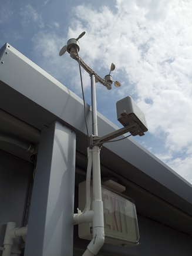
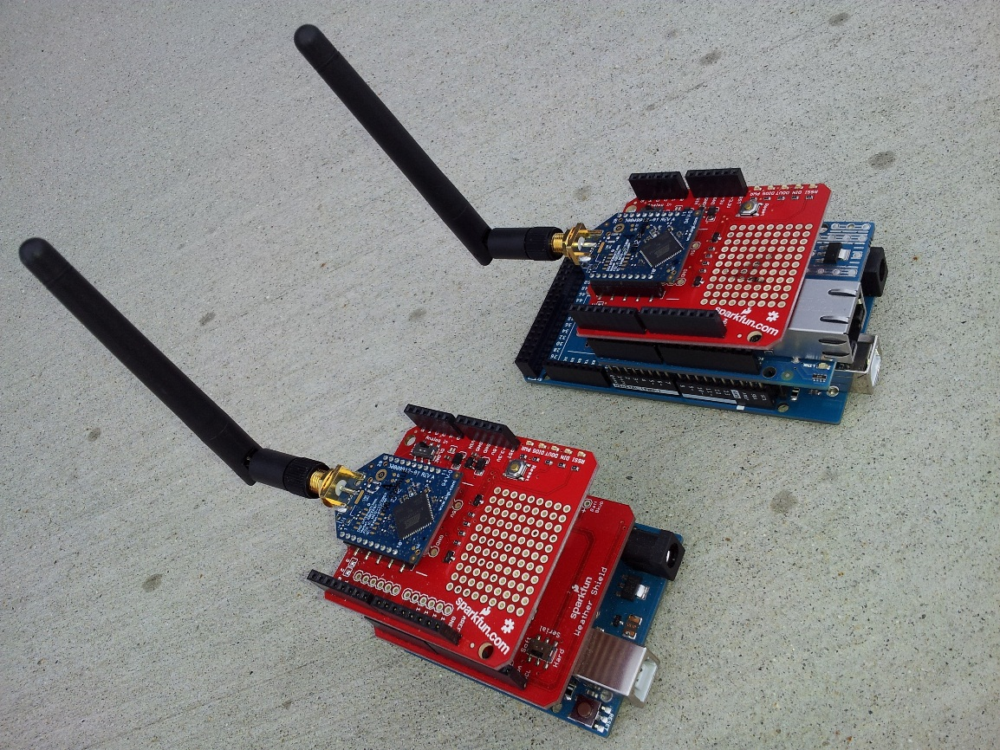
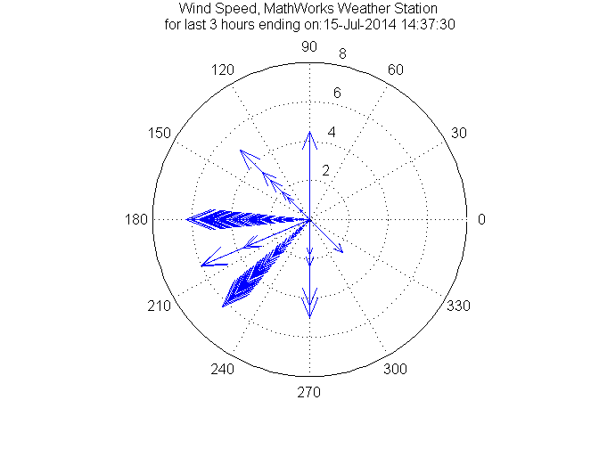
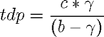
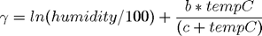
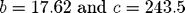
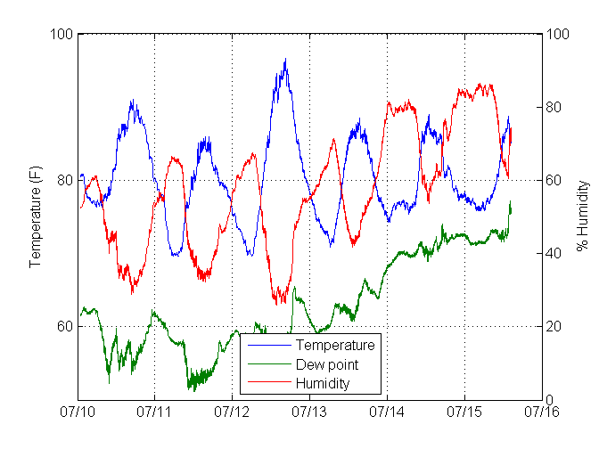
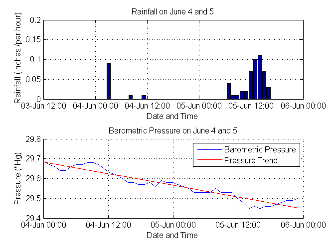
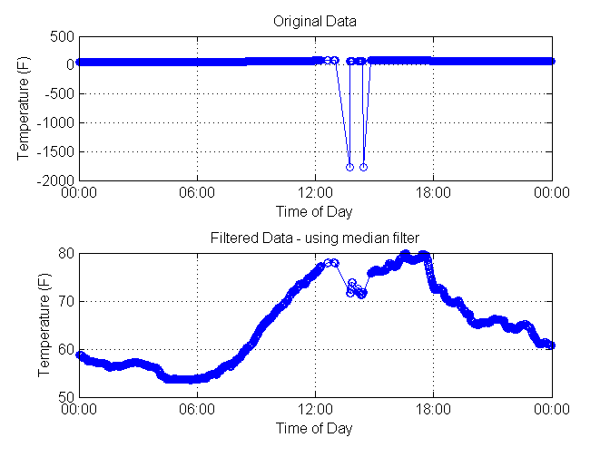

Introduction
Analyzing Weather Data from an Arduino-based Weather Station Connected to ThingSpeak, an Internet of Things (IoT) Data Aggregator
Description of Project
Building your own personal weather station is a lot easier than it used to be. With fickle New England weather, we decided we wanted to build our own weather station and use MATLAB to analyze the data. We wanted to answer questions such as:
- What direction was the wind blowing during the last 3 hours?
- How have the temperature and dew point varied over the last week?
- Does the barometric pressure really fall as a rain storm approaches?
Contents
- Step 1: Placement of the Weather Station
- Step 2: Choosing the Hardware
- Hardware List
- Step 3: Wiring up the Weather Station Transmitter and Programming the Outdoor Arduino
- Step 4: Wiring up the Weather Station Receiver and Programming the Indoor Arduino
- Step 5: Answering Our Questions Using the Weather Data
- Retrieve Weather Data from ThingSpeak
- Compute Some Basic Statistics over the Time Period and Display
- Visualize the Wind over Last Three Hours
- Calculate Dew Point
- Plot Temperature, Humidity and Dew Point versus Time
- Acquire and Process Weather Data on a Rainy Day in New England
- Visualize the Hourly Rain and Pressure Data and Find Pressure Trend
- Clean-up Data When There Are Outliers
- Use Threshold Filter to Remove Outlier Data
- Use Median Filter to Remove Outlier Data
- Conclusion
Step 1: Placement of the Weather Station
First, we had to decide where to place our weather station. We decided to place our station on the top floor of the parking garage. This spot was chosen since it was exposed to the elements but also had a roof to mount and shelter the electronics. Because we ultimately wanted to send data to a third party data aggregator, we had to keep that in mind when choosing our hardware.

Step 2: Choosing the Hardware
Because we ultimately wanted to send data to a third party data aggregator, we had to keep that in mind when choosing our hardware. The location we chose was out of range of our building's Wi-Fi so we needed to find a way to transmit the data from the station to another receiver located inside a nearby building. To do this we equipped an Arduino® Uno with a high power XBee® module. The data was then transmitted to another XBee module on an Arduino Mega inside the building. This Arduino was connected to the internet and the data was sent to a free data aggregation service, ThingSpeak.com. The full list of hardware we used in our setup is shown below.
Hardware List
- Arduino Uno plus weather shield and weather meters
- 2x XBee shields and 2x extended range XBee modules from Digi(R)International
- Arduino Mega with Ethernet Shield
- 2x Arduino stackable header kits for mounting
- 2x 5V transformer to power Arduinos
- XBee Explorer Dongle to program the XBee transmitter

Step 3: Wiring up the Weather Station Transmitter and Programming the Outdoor Arduino
The outdoor Arduino is mounted on the garage and is responsible for acquiring the measurements and transmitting the data to an indoor Arduino. To build it, we first soldered header pins onto the weather shield and one XBee shield. We then inserted the weather shield and XBee shield into the Arduino Uno according to the schematics provided with the shields. The XBee shield has a high power XBee transceiver plugged into it. We used X-CTU software to program the appropriate destination address and download the required firmware to the XBee shield. The anemometer, weather vane and rain sensor connect to the weather shield via RJ-45 connectors provided with the weather meters. Next we modified the Arduino code for the weather shield (found on GitHub) to allow the Arduino to send serial data using the XBee module.
Step 4: Wiring up the Weather Station Receiver and Programming the Indoor Arduino
The indoor Arduino is inside our building, and is responsible for receiving the data from the outdoor Arduino, validating the data then posting the data to an internet aggregator (ThingSpeak). To build it, we first soldered header pins onto the Ethernet shield and the second XBee shield. We then inserted the Ethernet shield and XBee shield into the Arduino Mega according to the schematics provided with the shields. We again used X-CTU software to program the appropriate destination address and download the required firmware to the XBee shield. Next, we programmed the Arduino to receive XBee messages and forward these messages at a rate of once per minute to ThingSpeak using the Ethernet connection. Prior to sending messages to ThingSpeak, we setup an account and configured the channel and field information. Once we have the station sending data to ThingSpeak, we are ready to start looking at the data with MATLAB.
Note that to reproduce the analysis entailed in the article, you do not need to set up the hardware. Live data from our setup is available on channel 12397 of ThingSpeak.com.
Step 5: Answering Our Questions Using the Weather Data
Retrieve Weather Data from ThingSpeak
To answer our first two questions, we use the thingSpeakFetch command to view available fields of data, simultaneously import all the fields into MATLAB and store the temperature, humidity, wind speed, and wind direction data in their own variables. Find more information about our ThingSpeak support.
[d,t,ci] = thingSpeakFetch(12397,'NumPoints',8000); % fetch last 8000 minutes of data
8000 points is the maximum number of points that ThingSpeak allows to be fetched in a single query. For our data rate, it corresponds to about 6 days of data.
tempF = d(:,4); % field 4 is temperature in deg F baro = d(:,6); % pressure in inches Hg humidity = d(:,3); % field 3 is relative humidity in percent windDir = d(:,1); windSpeed = d(:,2); tempC = (5/9)*(tempF-32); % convert to Celsius availableFields = ci.FieldDescriptions'
availableFields =
'Wind Direction (North = 0 degrees)'
'Wind Speed (mph)'
'% Humidity'
'Temperature (F)'
'Rain (Inches/minute)'
'Pressure ("Hg)'
'Power Level (V)'
'Light Intensity'
Compute Some Basic Statistics over the Time Period and Display
To get a better understanding of our data, we find the minimum, maximum and mean values for the data that we imported and we find the timestamp where the maximum and minimum values occur. This gives us a quick way to inspect if the data from our weather station looks reasonable.
[maxData,index_max] = max(d); maxData = maxData'; times_max = datestr(t(index_max)); times_max = cellstr(times_max); [minData,index_min] = min(d); minData = minData'; times_min = datestr(t(index_min)); times_min = cellstr(times_min); meanData = mean(d); meanData = meanData'; % make column vector summary = table(availableFields,maxData,times_max,meanData,minData,times_min) % display
summary =
availableFields maxData times_max
____________________________________ _______ ______________________
'Wind Direction (North = 0 degrees)' 338 '10-Jul-2014 05:01:32'
'Wind Speed (mph)' 6.3 '10-Jul-2014 12:47:14'
'% Humidity' 86.5 '15-Jul-2014 04:51:24'
'Temperature (F)' 96.7 '12-Jul-2014 16:28:55'
'Rain (Inches/minute)' 0.04 '15-Jul-2014 13:47:13'
'Pressure ("Hg)' 30.23 '11-Jul-2014 09:25:07'
'Power Level (V)' 4.44 '10-Jul-2014 10:25:01'
'Light Intensity' 0.06 '12-Jul-2014 13:23:38'
meanData minData times_min
__________ _______ ______________________
NaN 0 '10-Jul-2014 04:54:32'
3.2072 0 '10-Jul-2014 01:33:14'
57.386 25.9 '12-Jul-2014 13:39:39'
80.339 69.6 '11-Jul-2014 06:59:54'
5.625e-05 0 '10-Jul-2014 01:02:11'
30.04 29.78 '15-Jul-2014 13:04:08'
4.4149 4.38 '11-Jul-2014 09:22:06'
0.0092475 0 '10-Jul-2014 01:02:11'
If we get unexpected values such as maximum barometric pressure of 40 inches or a maximum temperature of 1700 degrees, we can assume that there may be some erroneous data points in our data set. Such errors can occur due to transmission errors, power glitches and other sources. In the last section of this article, we will show some ways to handle data that you have determined in an outlier, but for the data pulled when this report was published, everything looks to be in order. Here we used table, a new data type introduced in R2013b, to help visualize the data. For more information on table, see this blog entry.
Visualize the Wind over Last Three Hours
Since our weather station reports data approximately once every minute, we look at the last 180 minutes to answer our question about what the wind has been doing in the last 3 hours and we use the compass visualization in MATLAB to see both the wind speed and direction over the time period of interest. This is a mathematical compass where North (0 degrees) is at the right, and the degree values increase counterclockwise. 90 degree represents East (top), 180 degrees represents South (left) and 270 degrees represents West (bottom). Unless we are experiencing a wind shift due to a thunderstorm or a frontal passage, the compass will typically show a predominant wind direction denoted by a higher density of arrows during a three hour period. In the case of the data pulled for this example, we see the wind is predominantly out of the west and southwest, typical of summer time in New England.
figure(1) windDir = windDir((end-180):end); % last 3 hours windSpeed = windSpeed((end-180):end); rad = windDir*2*pi/360; u = cos(rad) .* windSpeed; % x coordinate of wind speed on circular plot v = sin(rad) .* windSpeed; % y coordinate of wind speed on circular plot compass(u,v) titletext = strcat(' for last 3 hours ending on: ',datestr(now)); title({'Wind Speed, MathWorks Weather Station'; titletext})
Calculate Dew Point
Now we are ready to answer our second question about how temperature and dew point have varied over the past week. The dew point is the temperature at which the air (when cooled) would become saturated with water vapor. The more humid the air mass, the higher the dew point. Dew point is also sometimes a measure of discomfort. When the dew point is over 65 degrees, many people start to say the air feels "sticky." Dew points over 70 feel uncomfortable to many. A common estimation for dew point,tdp, can be found using the equations and constants (see Reference) shown below: 


b = 17.62;
c = 243.5;
gamma = log(humidity/100) + b*tempC ./ (c+tempC);
tdp = c*gamma ./ (b-gamma);
tdpf = (tdp*1.8) + 32; % convert back to Fahrenheit
Plot Temperature, Humidity and Dew Point versus Time
Now that we have calculated the dew point, we are ready to plot the data and observe its behavior over the last 5 or 6 days.
figure(2) [ax, h1, h2] = plotyy(t,[tempF tdpf],t,humidity); set(ax(2),'XTick',[]) set(ax(2),'YColor','k') set(ax(1),'YTick',[0,20,40,60,80,100]) set(ax(2),'YTick',[0,20,40,60,80,100]) datetick(ax(1),'x','keeplimits','keepticks') set(get(ax(2),'YLabel'),'String',availableFields(3)) set(get(ax(1),'YLabel'),'String',availableFields(4)) grid on legend('Location','South','Temperature','Dew point', 'Humidity')
During a typical week, you can clearly see the daily variation in temperature and humidity. As expected the relative humidity typically rises at night (as the temperature falls toward the dew point) and the maximum temperatures are typically in the afternoon. The dew point temperature indicates how humid the air mass is. When we pulled the data to publish this example, you can see that the dew point was over 70 degrees which is typical of a hot and humid summer day in New England. If you run this code in MATLAB, you may get a different answer as you will be pulling the most recent data reported by the weather station.
Acquire and Process Weather Data on a Rainy Day in New England
The last question that we wanted to answer was does the barometric pressure really fall before it rains? To do this, we retrieve data from the weather station on a known rainy day. This time, we are interested in barometric pressure and rainfall. Our rainfall gauge is a self-emptying gauge that empties when it is filled. Our gauge rotates and empties when 0.01 inches of rain have fallen. Our Arduino code counts the number of times the meter has emptied every minute and sends the appropriate rainfall value to ThingSpeak. We use MATLAB to down sample our data to hourly samples so we can more easily see the accumulated rainfall and the pressure trend.
[d,t,ci] = thingSpeakFetch(12397,'DateRange',{'6/4/2014','6/6/2014'}); % get data baro = d(:,6); % pressure extraData = rem(length(baro),60); % computes excess points beyond the hour baro(1:extraData) = []; % removes excess points so we have even number of hours rain = d(:,5); % rainfall from sensor in inches per minute
Did we really get a lot of rain on June 5? Well, it's hard to tell if we just look at the minute by minute data since the maximum value is just 0.01 inches. However if we sum all the rain fall on June 5, we can see that we received 0.48 inches of rain which is 13% of the monthly average of 3.68 inches, indicating it was indeed quite rainy on this day. To get a better idea of when the maximum rainfall occurred we convert the data to hourly data as shown below.
rain(1:extraData) = []; t(1:extraData) = []; rainHourly = sum(reshape(rain,60,[]))'; % convert to hourly summed samples maxRainPerMinute = max(rain) june5rainfall = sum(rainHourly(25:end)) % 24 hours of measurements from June 5 baroHourly = downsample(baro,60); % hourly samples timestamps = downsample(t,60); % hourly samples
maxRainPerMinute =
0.0100
june5rainfall =
0.4800
Visualize the Hourly Rain and Pressure Data and Find Pressure Trend
After we have pre-processed our data, we are now ready to plot it. Here we use MATLAB to fit a trend line to the barometric pressure data. When plotted alongside the rainfall, do we see a drop in pressure in advance of the heaviest rainfall?
figure(3) subplot(2,1,1) bar(timestamps,rainHourly) % plot rain xlabel('Date and Time') ylabel('Rainfall (inches /per hour)') grid on datetick('x','dd-mmm HH:MM','keeplimits','keepticks') title('Rainfall on June 4 and 5') subplot(2,1,2) hold on plot(timestamps,baroHourly) % plot barometer xlabel('Date and Time') ylabel(availableFields(6)) grid on datetick('x','dd-mmm HH:MM','keeplimits','keepticks') detrended_Baro = detrend(baroHourly); baroTrend = baroHourly - detrended_Baro; plot(timestamps,baroTrend,'r') % plot trend hold off legend('Barometric Pressure','Pressure Trend') title('Barometric Pressure on June 4 and 5')
Once we plot this data and look at the trend, we can clearly see that the barometric pressure does indeed drop prior to our heavy rainfall event!
Clean-up Data When There Are Outliers
Our questions were fairly straightforward to answer but sometimes there are problems with the available data. For example, on May 30, we recorded some unreasonable temperature data. Let's see how to use MATLAB to clean it up.
[d,t] = thingSpeakFetch(12397,'DateRange',{'5/30/2014','5/31/2014'}); rawTemperatureData = d(:,4); newTemperatureData = rawTemperatureData; minTemp = min(rawTemperatureData) % wow that is cold!
minTemp = -1.7662e+03
Use Threshold Filter to Remove Outlier Data
Delete elements that fail the threshold test. In this case, we have some data points that are completely unreasonable such as a temperature reading of -1766 degrees F so let's limit the data to include only temperatures that are > 0 or < 120 which is reasonable for a Spring day here in New England.
tnew = t'; outlierIndices = [find(rawTemperatureData < 0); find(rawTemperatureData > 120)]; tnew(outlierIndices) = []; newTemperatureData(outlierIndices) = [];
Plot the cleaned up data and the original data.
figure(4) subplot(2,1,2) plot(tnew,newTemperatureData,'-o') datetick xlabel('Time of Day') ylabel(availableFields(4)) title('Filtered Data - outliers deleted') grid on subplot(2,1,1) plot(t,rawTemperatureData,'-o') datetick xlabel('Time of Day') ylabel(availableFields(4)) title('Original Data') grid on
Use Median Filter to Remove Outlier Data
Another way to remove outlier data is with a median filter. The median filter does not require as much pre-knowledge of the data set. It will just remove samples that appear to be outside the median of nearest neighbors. The filter Results in a vector of same length as original vector unlike deleting a data point which results in a gap in the data and a shorter record. This type of filter can be used to remove noise in a signal.
n = 5; % this value determines the number of total points used in the filter
Larger values of n include more neighboring values. For temperatures collected once per minute, we choose n = 5 because temperature should not typically change too much in 5 minutes.
f = medfilt1(rawTemperatureData,n); figure(5) subplot(2,1,2) plot(t,f,'-o') datetick xlabel('Time of Day') ylabel(availableFields(4)) title('Filtered Data - using median filter') grid on subplot(2,1,1) plot(t,rawTemperatureData,'-o') datetick xlabel('Time of Day') ylabel(availableFields(4)) title('Original Data') grid on
Conclusion
Well, we have now analyzed the data from our weather station and have answered the questions we were curious about. We have also demonstrated some ways to clean up data that does not pass initial inspection. Although our experiment focused on collecting data from a weather station, you may find this example useful for analyzing environmental data from other Internet of Things connected sensors with which you may be experimenting.
Copyright 2014, The MathWorks, Inc.